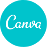
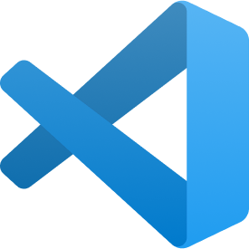
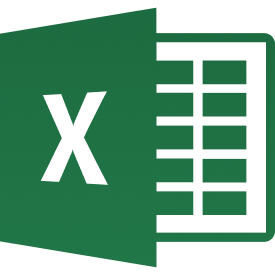
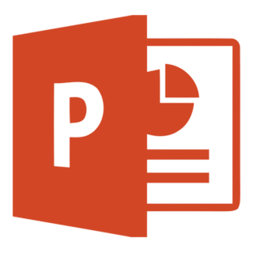
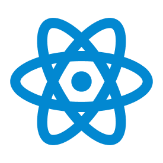
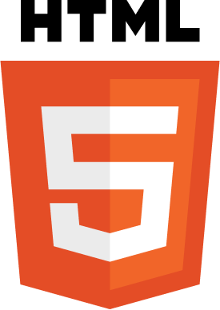
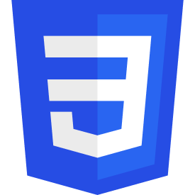
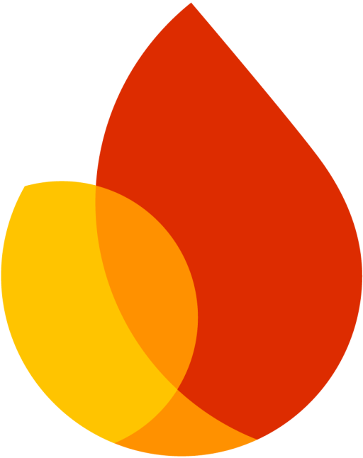
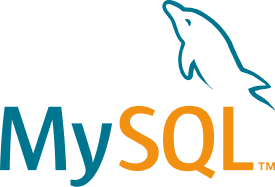

Merancang produk digital yang terasa jelas dan mudah dipakai.
Dia Ayu Wulansari, UI/UX Designer lulusan Sistem Informasi Telkom University. Fokus pada riset kebutuhan, wireframe, dan prototype siap implementasi untuk tim di Surabaya & Malang.

Latar belakang yang menggabungkan sistem & desain
Saya UI/UX Designer dengan latar belakang Sistem Informasi yang tertarik merancang antarmuka intuitif, fungsional, dan berpusat pada pengguna. Terbiasa menganalisis kebutuhan pengguna lalu menerjemahkannya menjadi desain yang terstruktur dan mudah dipakai.
Selain UI/UX, saya juga mengerjakan desain grafis dengan Canva dan pengolahan data dengan Microsoft Excel — bekerja rapi, detail, dan bertanggung jawab pada setiap proyek.
Perjalanan kerja saya
Dasaria, Malang
Merancang UI/UX website dan aplikasi perusahaan melalui wireframe, prototype, dan desain antarmuka responsif. Mendokumentasikan kebutuhan desain, mengelola aset proyek, dan berkoordinasi dengan tim pengembangan.
Dasaria, Malang
Merancang UI/UX website dan aplikasi perusahaan melalui wireframe, prototype, dan desain antarmuka responsif. Mendokumentasikan kebutuhan desain, mengelola aset proyek, dan berkoordinasi dengan tim pengembangan.
PT PLN Nusantara Power Service
Meredesain antarmuka aplikasi internal untuk meningkatkan kemudahan penggunaan dan efisiensi kerja, serta mendukung administrasi sertifikasi pegawai melalui desain sertifikat dan pengelolaan dokumen.
Tools & Keahlian
Hard Skills
Tools & Platform

Canva
VS Code
MS Excel
PowerPoint
React Native
HTML
CSS
Firebase
MySQL Bootstrap
BootstrapSoft Skills
Area Spesialisasi
Proyek & tugas akhir pilihan

Aplikasi Keuangan Kasir — UD Jaya
Aplikasi kasir mobile untuk pencatatan transaksi dan laporan keuangan harian UMKM.

Aplikasi Internal - PT PLN Nusantara
Meredesain antarmuka internal untuk efisiensi alur kerja karyawan BUMN energi divisi Human Capital.

E-Stock — Aplikasi Mobile Gudang
Aplikasi pengelolaan stok barang dengan fitur CRUD dan pengujian menyeluruh.

System Complaint — Aplikasi Web
Aplikasi terpadu untuk penerimaan dan pengelolaan keluhan atau kendala dari pelanggan.

Skema Penggajian AE — Aplikasi Web
Sistem aplikasi internal untuk mengelola dan merekap skema penggajian karyawan.
Proses Kerja & Pemecahan Masalah
Riset & Analisis
Memahami pain points pengguna melalui In-depth Interview, analisis kompetitor, dan pemetaan User Journey.
Arsitektur Informasi
Menerjemahkan temuan menjadi User Flows, struktur navigasi, dan Wireframe tingkat rendah (Lo-Fi) untuk validasi awal.
UI & Prototyping
Membangun High-Fidelity UI menggunakan Design System yang konsisten dan prototipe interaktif siap uji.
Usability Testing
Melakukan pengujian langsung ke pengguna untuk menemukan titik gesekan (friction) dan melakukan iterasi desain.
Pelatihan & sertifikasi
Ada proyek baru? Mari kita rancang bareng.
Saya terbuka untuk kolaborasi dan peluang kerja baru di bidang UI/UX. Hubungi saya lewat kanal berikut.